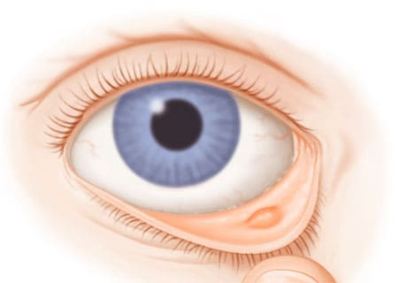

Те же самые микробы, которые вызывают воспаление глаз, могут собираться в железах век. Блефарит — воспаление сальных желез, расположенных у основания ресниц. Первый признак, который вы заметите, — слипание век из-за скопления желтого вещества вдоль края ресниц. Воспаленные веки отекают и становятся немного болезненными. Ребенок может жаловаться на зуд или ощущение, что «у меня что-то в глазу». Возможен дискомфорт при мигании и слезотечение из больного глаза. Ресницы утром могут быть склеены засохшим отделяемым, но сами глазные яблоки не так воспалены, как при конъюнктивите. Эти два состояния могут встречаться и одновременно.
КАК ЛЕЧИТЬ
Если инфекции век у вашего ребенка повторяются, протирайте их детским шампунем один-два раза в неделю для профилактики.
Здоровье ребенка от докторов Сирс / Сирс У. и др.